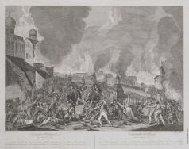

Москва помнит массу событий из истории нашей страны и хранит множество тайн. Кто населял эти земли
в незапамятные времена и почему несколько столетий из истории столицы называют «Тёмными
веками»? Откуда взялось прозвище Белокаменная, если Кремль красный? И кто учинил пожар 1812 года?
Вспоминаем главные загадки и вехи в истории Москвы.
Москва
| Численность населения: ↗ 13 104 177. | Территория города:2561,5 км 2 |
| Часовой пояс:UTC+3 | Телефонный код:+7 (495),(499) |
| Почтовый индекс:101000—135999 | "Стоимость жилья за м 2 : 298019 руб. |
Средняя температура в городе по месяцам:
| Дек. | Янв. | Фев. | Мар. | Апр. | Май. | Июн. | Июл. | Авг. | Сен. | Окт. | Ноя. |
|---|---|---|---|---|---|---|---|---|---|---|---|
| -4,1° | -7° | -5,3° | -1,1° | +6,8° | +13,7° | +18,7° | +20,5° | +20,6° | +13,9° | +7° | +0,6° |
Это наша столица и большой транспортный хаб. Через Москву идёт очень много маршрутов, поэтому рано или поздно вы сюда точно попадёте. Вообще, Москва — один из самых посещаемых туристами городов мира, самый крупный и населенный город Российской Федерации. Официально в Москве живут 13,1 млн человек (данные на 2023 год) — это даже больше, чем население целой Греции, Португалии или Бельгии.
Основные моменты
Здесь каждая улица, каждый дом имеет богатую историю. Красная площадь, Кремль, Третьяковка, Храм Христа Спасителя, Чистые пруды и «Патрики», Поклонная гора, Арбат, Воробьевы горы... Сколько бы дней вы ни планировали провести в Москве, обойти все интересные места за раз не получится.
И жителей России, и иностранцев Москва впечатляет своим размахом: десятиполосным МКАДом, огромными зелеными парками, величественными сталинскими высотками и футуристичными небоскребами Москвы-Сити. В столице России не принято рано ложиться спать: здесь без труда можно найти круглосуточные магазины и парикмахерские, кафе и рестораны.
Москва — один из самых привлекательных для путешественников мегаполисов мира. Здесь есть множество достопримечательностей и парков, прекрасно развита инфраструктура, а жизнь кипит в любое время года и суток.
Что было на месте Москвы до её основания
Два тысячелетия назад болотистые земли, где сегодня расположена Москва, покрывали дремучие леса. А первые поселения неизвестных племён появились на Боровицком холме (там, где сейчас стоит храм Василия Блаженного ) ещё 4000 лет назад.


III тысячелетие до н.э. Каменный молоток-топорик, обнаруженный на месте 14-го корпуса Кремля
• IV-III тысячелетие до н.э. Скребок, найденный под Архангельским собором
В эпоху раннего железа (в VIII веке до н. э.) здесь поселились дьяконовцы — загадочная цивилизация, о происхождении которой спорят современные историки. Одни считают их прародителями славян, другие — финно-угорским народом. Достоверно известно лишь, что они были охотниками, разводили коров и лошадей. Также установлено, что дьяконовцы кремировали умерших соплеменников, собирая прах в «домики мёртвых». Есть мнение, что эти сооружения стали прообразом избушки на курьих ножках в славянской мифологии.
В VII веке н. э. дьяконовская культура перестала существовать. Тайна её исчезновения до сих пор не разгадана. Племена восточных славян пришли сюда лишь три столетия спустя. Времена до появления на московских землях вятичей и кривичей историки называют «Тёмными веками».
В каком году и кем была основана Москва
Впервые упоминается в Ипатьевском летописном своде. В нём говорится, что в 1147 году удельный князь Юрий Долгорукий (один из сыновей легендарного Владимира Мономаха) пригласил своего военного единомышленника, новгородского правителя Святослава Ольговича, на пиршество «в Москов». Возможно, город на этом месте существовал и раньше, но точно это установить невозможно. Поэтому датой основания города решили считать его первое упоминание.


Страница из Ипатьевского летописного свода с первым упоминанием Москвы • Фрагмент списка Тверской
летописи
Второй раз о Москве в письменных источниках говорится (на этот раз в Тверской летописи), что в 1156 году это было уже не маленькое селение, а крепость. Позднее археологи установили, что деревянные стены с бойницами времён Долгорукого находились на юго-западе современного Кремля.
Историки считают, что город получил название от реки, на берегах которой построен. У слова древнеславянское происхождение, оно означает «сырость, влажность». Также есть гипотезы, что это слияние марийских слов «медведь» и «мать» либо балтийский топоним со значением «топкий, слякотный».
Укрепление Москвы
В первые столетия существования на Москву обрушились многие напасти: войны, пожары и эпидемии. В 1177 году крепость разрушил рязанский князь Глеб Ростиславич. Дома отстроили, но уже в 1238 году город вновь был разорён — на этот раз войсками хана Батыя. Потом последовали нападения Тохтамыша, а затем и Девлет-Гирея. Зимой 1353 года в Москву пришла «чёрная смерть» — пандемия лёгочной чумы, распространившаяся тогда по всей Европе. Погибло до четверти населения города. В 1365 году в знойный день в городе случился страшный пожар, в результате которого не уцелело ни одного здания. Несмотря на многочисленные невзгоды, Москва раз за разом восставала из пепла.

Во времена монгольского владычества люди искали спасения от захватчиков на спокойных перифериях княжеств. В небольшую Москву устремились переселенцы из Владимира, и Ростова — крупнейших городов Северо-Восточной Руси тех времён. Также сюда съезжались выходцы из Полоцка, Чернигова, Смоленска, которые страдали от нападений литовцев. Москва постепенно разрасталась и начинала укреплять позиции среди других развитых городов.
Долгое время Москва входила в состав Владимирского княжества. К XIV столетию город стал центром самостоятельного государственного образования. Здесь правил Иван I Данилович. Князь договорился с правителями Орды, что сам будет собирать дань со всех русских территорий и привозить в Сарай-Бату. Сокровища стали стекаться в Москву, а князь Иван решал, что можно оставить у себя. Казна росла, а правителя даже прозвали Калитой, что означает «денежный мешок».

Главным экономическим и политическим противником Москвы того времени была Тверь. Борьба городов за влияние длилась около двух столетий. История вполне могла повернуться таким образом, что именно Тверь стала бы центром Руси. Но дело решил случай. В 1327 году в Твери вспыхнуло восстание против монголо-татарских завоевателей. Орда жестоко подавила мятеж: город был разорён и сожжён. В карательном походе на стороне ханов принял участие и правитель Москвы Иван Калита. За исключительную лояльность его наделили статусом великого князя.
Кремль
Яркая фигура в древней российской истории — князь Дмитрий Иванович, которого прозвали Донским в честь триумфа на Куликовом поле. При Дмитрии Москву неоднократно осаждали — то литовцы, то ордынцы. Поэтому правитель повелел создать мощную каменную крепость на месте существовавших деревянных укреплений.
Камни с месторождения белого известняка начали свозить в Москву в 1366 году. Точная дата окончания строительства теряется в истории. Однако судя по тому, что, взяв в окружение Москву в конце ноября 1368 года, литовский князь Ольгерд покорить город не смог, к тому времени цитадель уже была построена.
Кремль Дмитрия Донского просуществовал 123 года. В XV веке крепость кардинально перестроили: стены разобрали и воздвигли заново, но уже из красного кирпича. Но прежние мощные стены остались в народной памяти, и даже спустя столетия Москву продолжали называть Белокаменной.
В конце XV столетия князь Иван III повелел построить новый Кремль: каменные стены нужны были не столько для обороны, сколько для демонстрации величия города и его правителя. В 1485 году итальянский зодчий Антонио Джиларди, которого на русский лад прозвали Антоном Фрязиным, заложил первую башню новой цитадели. Позднее к возведению стен присоединились другие заморские специалисты — Марко Руффо, Алоизио да Каркано и Пьетро Антонио Солари. Окончательно крепость построили уже при князе Василии III в начале XVI столетия.
В XVIII веке твердыню решили оштукатурить, строение вновь стало белым. Со временем известковый слой стал осыпаться, стены приобрели «облезлый» вид. Привычный для нас красный цвет Кремль получил лишь в 1947 году, после реставрации.
Становление Москвы: от Василия Тёмного до Ивана Грозного
Самое древнее сохранившееся до наших дней московское здание — каменный Спасский собор Спасо-Андроникова монастыря. Историки считают, что его возвели в 1427 году во время правления князя Василия Тёмного. Церковь несколько раз перестраивали и реставрировали, но основной объём остался неизменным. Внутри сохранились, как предполагают специалисты, фрески иконописца Андрея Рублёва.
Со времён Ивана III в Москве появляются знакомые нам названия улиц и районов. В 1475 году в летописях начинают упоминать Арбат — часть города, где, вероятно, останавливались татарские послы и купцы. Они дали этой территории Москвы привычное для себя название — «рабат» (с арабского переводится как «постоялый двор»). Это слово со временем трансформировалось в Арбат.
Миниатюры из Лицевого свода: Возвращение Ивана III в Москву из похода • Начало строительства Успенского собора
При князе Василии III (годы правления: 1505-1533) Москва обзавелась знаковыми строениями, которые по сей день украшают город. В селе Коломенском (сейчас это часть города, а в то время была далёкая окраина) в честь рождения сына правитель повелел возвести церковь Вознесения. Это было первое каменное шатровое сооружение в стране (его крыша выглядит как вытянутая пирамида). Сегодня эта церковь — один из самых узнаваемых символов российской столицы.
Всередине XVI столетия Москва приобрела новый статус. Князь Иван IV Грозный венчался на царство. Центр его вотчины официально стал «царствующим градом», то есть столицей государства.


Миниатюры из Лицевого свода: закладка церкви Иоанна Предтечи • Венчание Ивана Грозного на царство
Во время правления Ивана Грозного в 1555-1561 годах рядом с Кремлём воздвигли собор с луковичными главами, который впоследствии станет самым известным архитектурным символом России всех времён. Храм состоит из 11 отдельных церквей на общем фундаменте. Каждое из сооружений посвящено святым, которых особо почитал царь, либо ключевым моментам войны против Казанского ханства. В народе собор назвали по имени канонизированного московского юродивого Василия Блаженного.
Смутное время
Современники отмечали, что Москва конца XVI столетия была многолюднее и больше, чем в начале XVII века, во время Смуты. Город пришёл в упадок из-за частой смены власти, польской интервенции и многочисленных сражений, которые сопровождались грабежами и пожарами. Особенно тяжело пришлось москвичам зимой 1612-1613 годов, когда в разграбленном городе не хватало еды и многие умирали от голода.
Поляки, состоящие в войске Лжедмитрия II, взимали огромные налоги с местного населения. Это полностью разорило москвичей и привело к многочисленным протестам. В результате горожанам запретили пользоваться саблями и топорами, нельзя было даже продавать колотые дрова. Временные власти опасались, что поленья станут грозным оружием в руках недовольных москвичей.
В 1613 году Земский собор, созванный после освобождения Москвы нижегородским ополчением, избрал царём 16-летнего Михаила Романова. Времена Смуты закончились, но потребовалось ещё 20 лет, чтобы Москва оправилась от разорения.
Первые цари из династии Романовых
Историки считают, что к середине XVII века в городе проживало уже 150-200 тысяч человек. По средневековым меркам это был огромный европейский мегаполис.
Город делился на четыре части:
-
Кремль
-
Китай-город (включал территорию современных улиц Никольской, Ильинки, Варварки и района Зарядья)
-
Белый город (граничил с Китай-городом с одной стороны и современным Бульварным кольцом с другой)
-
Земляной город (большая территория, примерно совпадающая с радиусом нынешнего Садового кольца)


Реконструкция Москвы в XVI веке: вид на центр с Красного холма • панорама Замоскворечья • Большая Никитская •
Художник: М. П. Кудрявцев
Вблизи Кремля жили дворяне и другие обеспеченные горожане, внутри Китайгородских стен и в Белом городе — купцы, в Земляном городе — стрельцы, ремесленники, крестьяне и рабочие.
В городе появлялось всё больше каменных зданий — они принадлежали боярам и купцам. Но основная часть застройки оставалась деревянной. Строить дома из дерева было дешевле, к тому же зимой и осенью в них было не так холодно, как в кирпичных.
Здания строили близко друг к другу, это становилось проблемой при пожарах: огонь быстро перекидывался с одного дома на другой. Несмотря на частые возгорания, Москва быстро восстанавливалась. В городе даже существовал востребованный рынок, где можно было купить готовые деревянные срубы и всё, что могло понадобиться погорельцам.


1661 год. Посольский двор в Китай-городе • 1673-1674 года. Успенская звонница Кремля, подъём колоколов • 1672
год. Сретенские ворота. Прибытие Михаила Фёдоровича на царствование
Буквально на каждом шагу в Москве велась торговля: от Китай-города до любого окраинного переулка в Земляном городе. Рынки делились по типу товара: на одних продавали хлеб, на других — мясные изделия, на третьих — мебель. Были и необычные в современном понимании торги: например, недалеко от Кремля располагался Вшивый рынок. Это своего рода большой салон красоты, где цирюльники под открытым небом стригли и брили. По неубранным волосам здесь гуляли как по ковру!
Необычная достопримечательность средневековой Москвы — ров у северо-восточной части Кремля. В былые времена он был заполнен водой, а при царе Алексее Михайловиче ров осушили и использовали в качестве зверинца. Горожане приходили сюда, чтобы посмотреть на львов, привезённых из Англии, и слона с верблюдами — подарок русскому царю от иранского шаха.
В числе знаковых построек того времени — деревянный летний дворец Алексея Михайловича в Коломенском. Приезжих иностранцев резиденция поражала своим подчёркнуто русским архитектурным стилем. Дворец разобрали в XVIII веке, но воссоздали по чертежам уже в наше время.
Москва при Петре I
Глобальные перемены в истории Москвы наступили во время правления Петра I. Царь с характерной для него настойчивостью начал внедрять в древней российской столице западный быт. В 1698 году он вернулся из Европы и уже в первые дни пребывания в родном городе лично остриг боярам бороды и приказал им отныне носить европейские кафтаны. Новые наряды у москвичей приживались медленно, люди одевались, как тогда говорили, «по-немецкому» только на людях, а в кругу семьи предпочитали традиционный русский костюм.

1707 год. Торжественные похороны Ф. А. Головина. Процессия в Симонов монастырь. Художник: П. Пикарт • 1712 год.
Свадьба Петра I и Екатерины I в Лефортовском дворце. Художник: А. Ф. Зубов
Постепенно менялся и архитектурный облик города. Чтобы минимизировать число пожаров, государь повелел возводить в Кремле и Китай-городе только каменные здания. Впрочем, этот указ вскоре был отменён, так как камень понадобился для постройки нового города на Неве
Также государь повелел наблюдать за чистотой московских улиц, а мусор свозить в определённые для этого места, а не сбрасывать в пруды и реки. В 1703 году власти очистили Поганые пруды — с этого момента и до наших дней они известны как Чистые. Москвичи стали свободнее дышать, так как зловонного запаха от засорённых водоёмов стало меньше.
В 1712 году столицу новообразованной Российской империи перенесли в Санкт-Петербург. Москва стала вторым по значению городом страны, но сохранила негласный статус экономического центра.
1707-1720 года. Московский Кремль. Художник: Я. Бликланд • 1707-1709 года. Новодевичий монастырь. Художник: П.
Пикар или И. фон Бликландт • 1707 год. Каменный мост. Художник: П. Пикар
XVIII и XIX века
Главной проблемой города на протяжении веков оставались пожары. Их регулярность даже породила поговорку «От копеечной свечки Москва сгорела». По легенде, в 1737 году страшный пожар действительно начался из-за свечки, которую в своём чулане перед иконой поставила одна женщина.
Самый известный в истории Москвы пожар случился в 1812 году, когда в город с войсками вошёл Наполеон. Неизвестно, было ли это случайностью, стратегическим решением покинувших город властей или самих местных жителей. Так или иначе, деревянные дома вспыхивали, как спички. Пламя охватило Арбат, Моховую, Тверскую, Замоскворечье, Солянку, Немецкую слободу. Сгорело две третьих всей столичной застройки: около 6,5 тысячи домов!
После войны город застраивали практически с нуля. С этого момента в центре разрешалось возводить только каменные здания. Строительство из дерева допускалось на окраине, но лишь при условии, что у домов будут железные крыши и оштукатуренные фасады. В это время был благоустроен Александровский сад, реорганизована территория Красной площади, появился Манеж и были установлены Триумфальные ворота у Тверской заставы (ныне на площади Победы).

1812 год. Наполеон в Кремле наблюдает за Московским пожаром. Художник: Джордж Крукшанк • 1813 год. Китай-город.
Художник: Джон Томас Джеймс
Москва издревле считалась купеческим городом, а в XVIII-XIX веках стала ещё и центром российской промышленности и ремесла. Тут располагались монетные дворы, государственные оружейные заводы и частные текстильные мануфактуры.
С отменой крепостного права в 1861 году наступила новая эпоха. В Москву на заработки потянулись крестьяне — они устраивались на заводы. Во второй половине XIX века рабочего люда в древней столице стало так много, что её даже называли «мужицко-купеческим» городом
1842 год. Старейшее из известных фото (точнее, дорисованный дагеротип) Москвы
Миграция из деревень породила спрос на жильё, какого Москва не знала раньше. Начали застраиваться окраины. Значительно изменился и центр города: вместо маленьких усадеб на улицах вырастали доходные дома — многоэтажки, где квартиры сдавались постояльцам на долгий срок.
В 1900 году по населению Москва занимала второе место в Российской империи после Петербурга, в Европе — шестое. Во время переписи в городе насчитали 1 миллион жителей!
Советская Москва
12 марта 1918 года столицу России вновь перенесли в Москву. С 1922 года она, оставаясь столицей РСФСР, стала одновременно и главным городом СССР. Сюда переехали представители государственной власти. Из купеческого патриархального города Москва начала стремительно превращаться в мультикультурный деловой мегаполис.
1920-1930-е годы ознаменовались небывалым развитием общественного транспорта. В 1924 году в городе запустили автобусные маршруты, а в 1933-м начали курсировать первые троллейбусы. Ещё через десятилетие открылась линия метро от станций «Сокольники» до «Парка культуры» с ответвлением от «Охотного ряда» до «Смоленской».


1918 год.Демонстрация в первую годовщину Великой Октябрьской социалистической революции перед зданием
Моссовета на Советской (Тверской) площади.• 1933-1934 года. Строительство станции метро Комсомольская•
1934-1935 год. Красная площадь• Перекресток Кузнецкого Моста и Петровки в 1935г.